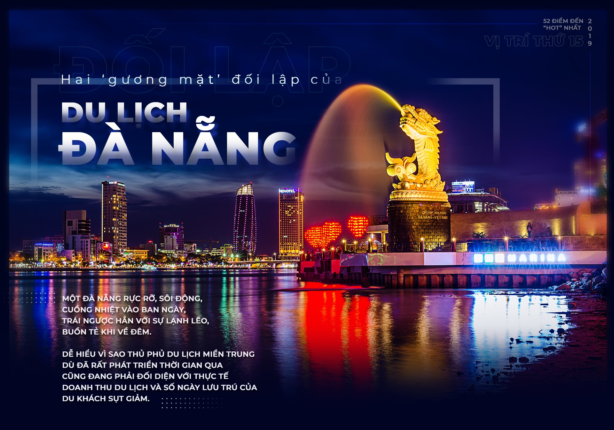
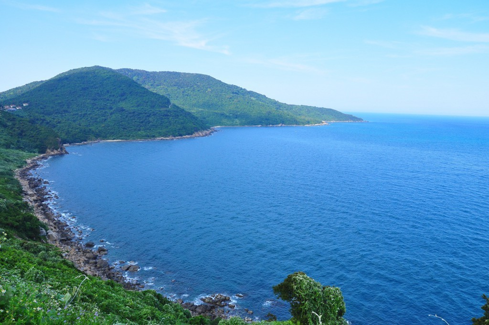

Top địa điểm du lịch tại Đà Nẵng hấp dẫn nhất tha hồ bạn lựa chọn

1. Bãi Bụt
Địa chỉ: Hoàng Sa, Bãi Bụt, bán đảo Sơn Trà, tp.Đà Nẵng
Nằm ở phía nam bán đảo Sơn Trà, Bãi Bụt là một trong những địa điểm du lịch Đà Nẵng miễn phí đáng đến nhất. Được mệnh danh là tuyệt cảnh dưới chân Chùa Linh Ứng, Bãi Bụt là nơi nhiều du khách trong và ngoài nước chọn làm nơi tham quan, tắm biển, ngắm san hô, khám phá các loài sinh vật biển,... khi đến du lịch tại Đà Nẵng.

2. Ghềnh Bàng
Địa chỉ: Hoàng Sa, Địa chỉ: P. Thọ Quang, Q. Sơn Trà, TP. Đà Nẵng.
Cách trung tâm thành phố tầm 20km, Ghềnh Bàng là địa điểm du lịch Đà Nẵng thu hút đông đảo các bạn trẻ đến đây check in, chụp hình. Nơi đây quyến rũ du khách gần xa bởi hình thù độc đáo của các mỏm đá nhấp nhô đầy tính nghệ thuật. Đến đây, du khách tha hồ tắm biển, ngắm san hô, cắm trại, thưởng thức hải sản tươi ngon,...

3. Cầu Rồng
Địa chỉ: P. An Hải Tây, Q. Sơn Trà, TP. Đà Nẵng
Đưa vào hoạt động năm 2013, điểm tham quan Đà Nẵng Cầu Rồng là một trong những địa điểm du lịch mới ở Đà Nẵng hấp dẫn du khách. Với thiết kế độc đáo mang hình dáng con Rồng bắc qua sông Hàn thơ mộng, cầu Rồng là cây cầu thứ 7 tạo nên biểu tượng “thành phố của những câu cầu”. Đến đây vào các ngày cuối tuần, bạn còn xem được cảnh rồng phun lửa, phun nước sống động.